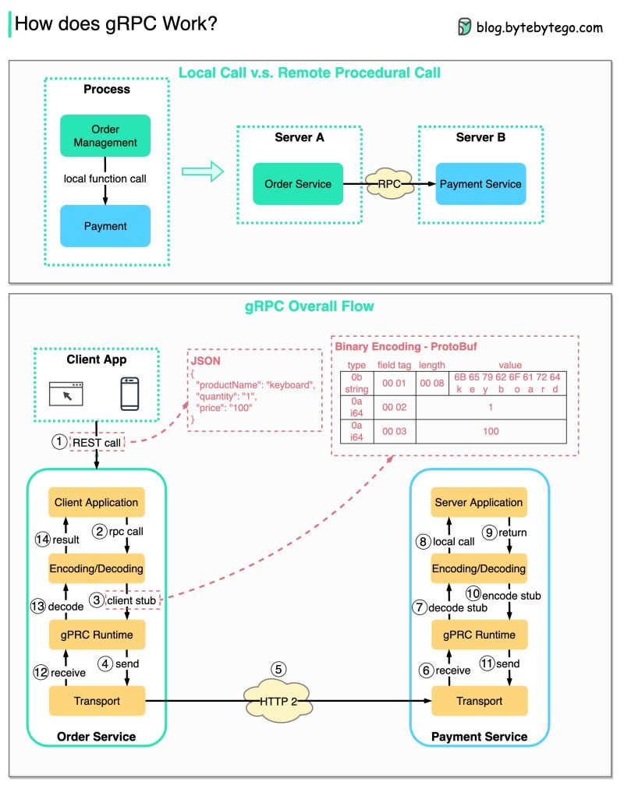

gRPC
gRPC is a remote procedure call (RPC) framework that uses HTTP/2 for transport and protobuf. Used to communicate services in a microservices architecture. From the user's point of view, it acts like a local function call, but instead the call is executed on a remote server.
Benefits of gRPC
- Scalability: it uses a binary serialization format (Protocol Buffers), meaning smaller message sizes and faster processing times compared to other protocols such as json or xml.
- Strong typing: you define the structure and types of the messages in a
.protofile. - Bi-directional streaming: gRPC supports streaming requests and responses. The two streams operate independently, so the client and server can read and write in any order.
- Other features: gRPC supports out of the box authentication, deadlines, load balancing, service discovery and more.
How does gRPC work?
The diagram below illustrates the overall data flow for gRPC.
